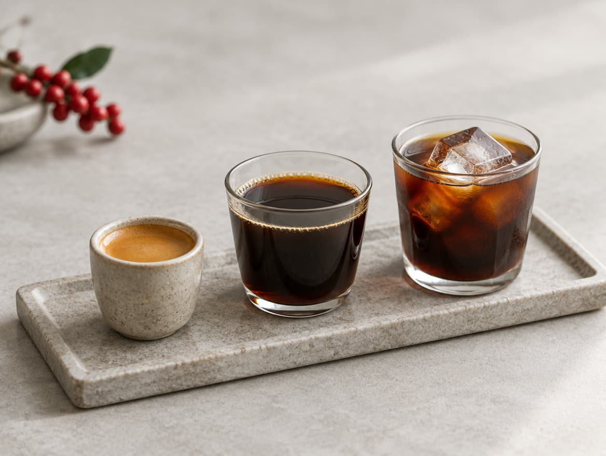

Espresso
Tu máquina ya hace media faena. Invierte en un buen molinillo y en café recién tostado.
Receta de partida: 18 g de café → 36 g en taza, unos 28 segundos.
Calcula tu recetaInicio / Journal / Cómo empezar en el café de especialidad
Guías y consejos
Entras en una cafetería de especialidad y la carta habla de Etiopía, de honey y de V60. Te sientes en una clase a la que no te apuntaste. Tranquilo. Para empezar solo necesitas una receta, una báscula y curiosidad.

Tres preguntas y te decimos qué método probar primero.
Tu máquina ya hace media faena. Invierte en un buen molinillo y en café recién tostado.
Receta de partida: 18 g de café → 36 g en taza, unos 28 segundos.
Calcula tu recetaRápido, difícil de estropear y fácil de limpiar.
Receta de partida: 15 g de café, 210 ml de agua (1:14), unos 2 minutos.
Calcula tu recetaTaza limpia y aromática. Ideal para notar el origen.
Receta de partida: 15 g de café, 240 ml de agua (1:16), unos 3 minutos.
Calcula tu recetaMás cuerpo y textura, y muy sencilla de preparar.
Receta de partida: 15 g de café, 225 ml de agua (1:15), unos 4 minutos.
Calcula tu receta
Antes de gastarte un euro en cosas bonitas, compra estas tres.
Medir con cucharas o a ojo da una taza distinta cada día. Pesar lo arregla.
El café molido pierde aroma en cuestión de minutos. Molerlo justo antes de preparar es la mejor forma de conservarlo. Los de muelas muelen de forma más uniforme que los de cuchillas.
Pequeños y fáciles de limpiar.

Receta de partida con V60. Cámbiala cuando le pilles el truco.

15 g de café molido medio-fino.
Agua entre 92 y 96 °C.
Vierte 30 ml (el doble que de café) y espera unos 30 segundos. El café «respira».
En círculos lentos, hasta llegar a 240 ml.
Debería terminar hacia los 3 minutos. Si va mucho más rápido o más lento, cambia solo la molienda.
El café no caduca como un yogur. Cambia con los días. Mueve el control y míralo.
Es orientativo. Cada tostador recomienda su propia ventana: manda lo que ponga tu bolsa.
Toca cada tarjeta para ver la solución.
No. Una báscula, un molinillo de muelas y un gotero bastan para empezar.
Para empezar, 15 g de café y 240 ml de agua. El estándar de la SCA ronda 1:18. Muchos profesionales usan entre 1:15 y 1:17.
Los granos conservan el sabor varias semanas tras el tueste; el café molido lo pierde en minutos. Mira la recomendación de tu tostador.
Pierde aroma muy rápido. Si no tienes molinillo, pide que te lo muelan al momento y bébelo pronto.